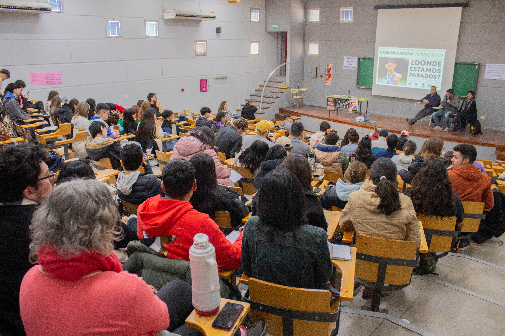

Ver
Periodismo local
Guillermo Davies "Es difícil el panorama del trabajador de prensa"
De: Rocco Giacomucci

Consumo de medios
Micrófono compartido en la nueva era digital:
¿Pluralización de voces o potencial desinformación?

Medios Alternativos